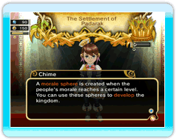

25
|
Moral |
 |
Dir ist vielleicht aufgefallen, dass die Bürger zu funkeln beginnen, wenn sich der König viel Zeit für sie nimmt.
 Das zeigt an, dass sie glücklich sind. Seine Untertanen glücklich zu machen, steigert die Moralanzeige oben links auf dem Bildschirm. Es gibt noch andere Wege, um die Moralanzeige zu steigern. Stadtbewohner, die in der Bäckerei oder im Emporium ein großartiges Schnäppchen gemacht haben, oder die Erfüllung von Wünschen des Volkes schlagen sich ebenfalls auf der Anzeige nieder. Wenn die Moralanzeige komplett gefüllt ist, erhältst du zusätzliches Einkommen, das in Form eines „Moralbonusses“ im Tagesbericht auftritt. Eine komplett gefüllte Moralanzeige generiert außerdem eine Moral-Sphäre - einen Gegenstand, der zum weiteren Ausbau des Reiches verwendet werden kann. Die Anzahl von ansammelbaren Moral-Sphären steigt mit der Anzahl von Bäckereien und Emporien im Reich. |
● Moral-Sphären einsetzen
・Moral heben  Wenn du bereit bist, eine Moral-Sphäre einzusetzen, ruf Chime herbei. Nun kannst du die Moral deines Volkes heben. Wenn du innerhalb dieser Zeit mit Bürgern sprichst, werden ihre Familien insgesamt glücklicher. Auch das Gespräch mit Abenteurern innerhalb dieser Zeit wirkt sich zeitweilig positiv auf ihre Statuswerte aus. Wenn du bereit bist, eine Moral-Sphäre einzusetzen, ruf Chime herbei. Nun kannst du die Moral deines Volkes heben. Wenn du innerhalb dieser Zeit mit Bürgern sprichst, werden ihre Familien insgesamt glücklicher. Auch das Gespräch mit Abenteurern innerhalb dieser Zeit wirkt sich zeitweilig positiv auf ihre Statuswerte aus.・Entwicklung des Königreichs Im Schlossmenü können Moral-Sphären zur Weiterentwicklung des Reiches eingesetzt werden. Durch diese Handlung wird der Wohlstand des Landes angehoben, und so können das ein oder andere neue Geheiß erlassen und weitere nützliche Informationen bezüglich der Wünsche des Volkes eingeholt werden. Die Erfüllung dieser Wünsche steigert wiederum die Moral der Bürger. Es gibt noch weitere Vorteile bei der Weiterentwicklung des Reiches - am besten immer ein Auge offen halten! |
● Moralrausch
Wenn Abenteurer in ihrem Einsatzort eine Aufgabe erfüllt haben, gerät das Reich in einen Moralrausch. Sämtliche Handlungen des Königs, um die Moral des Volkes zu heben, bringen nun einen Bonus hervor. In diesem Status kann die Moral noch weiter in die Höhe getrieben werden. |
 |
 |
 |